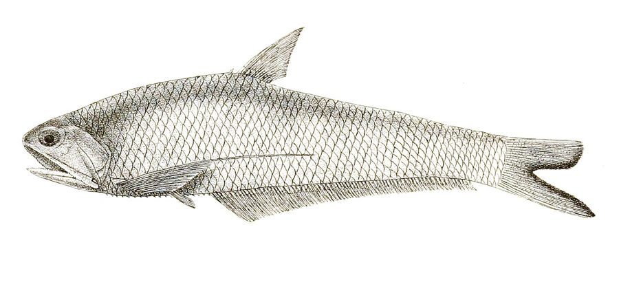

फाँसाGangetic Hairfin Anchovy
Setipinna phasa · Engraulidae · FSH-0041

- Scientific name वैज्ञानिक नाम
- Setipinna phasa (Hamilton, 1822)
- Family कुल
- Engraulidae
- Hindi हिंदी
- फाँसा
- Local names स्थानीय नाम
- phansa, fansa, hairfin anchovy
- Status here यहाँ की स्थिति
- native
- Movement आवागमन
- Resident, here all year
- Known from कहाँ दर्ज
- Others have published records from the wider Awadh–Purvanchal plain, none yet from Basti–Ayodhya अवध–पूर्वांचल से दूसरों के प्रकाशित अभिलेख, बस्ती–अयोध्या से अभी नहीं
- IUCN IUCN
- LC
- Review समीक्षा
- audited and independently read
When to look कब देखें
Present all year. साल भर मौजूद।
Tell it apart from इनसे अलग पहचानें
फाँसा / Gangetic Hairfin Anchovy
Setipinna phasa (Hamilton, 1822) — Engraulidae
फाँसा — बहुत छोटी चाँदी मछली जो गंगा प्रणाली की नदियों में झुंड में पाई जाती है। पारदर्शी शरीर, सूक्ष्म दाँत, पलकों के आगे लंबी हड्डी की संरचना। सूप और करी में स्वादिष्ट, और बड़ी मछलियों के लिए महत्वपूर्ण भोजन।
Quick Identification त्वरित पहचान
| Feature | Description |
|---|---|
| Size | 5–8 cm |
| Body | Very slender, thread-like, laterally compressed; transparent |
| Head | Small; mouth terminal; maxilla extends beyond eye |
| Coloration | Silvery, translucent; back slightly darker |
| Anal fin | Very long with 20–25 rays, extending from anus nearly to tail |
| Barbels | Short; two small maxillary barbels |
Field tip: The smallest fish in eastern UP waters; found in vast schools in open water. So small that it passes through ordinary fishing nets. The extremely elongate anal fin and maxilla extending beyond the eye are diagnostic. Looks almost transparent when alive.
हिंदी: अत्यंत छोटी, पारदर्शी मछली; पेट के नीचे लंबा पंख।
Morphology आकारिकी
Biometrics (field populations):
| Measurement | Range |
|---|---|
| Standard length | 5–8 cm |
| Weight | 0.3–0.8 g |
| Anal fin rays | 20–25 |
| Dorsal fin rays | 12–14 |
Body structure: Extremely slender, thread-like, laterally compressed. Body is highly translucent, allowing the viscera to be visible in fresh specimens. Streamlined for schooling in open water.
Head: Small, triangular. Eyes moderately large. Mouth terminal, with fine pointed teeth. The maxilla extends beyond the eye level.
Coloration: Silvery overall with a translucent appearance. Back slightly darker, greenish or brownish. Belly white. Fins nearly transparent.
Fins: Dorsal fin small, with 12–14 rays. Anal fin very long, extending from the anus to the caudal peduncle. Caudal fin forked. Pectoral fins small and rounded.
Behaviour & Ecology व्यवहार और पारिस्थितिकता
A planktivore that feeds on tiny zooplankton, particularly copepods and ostracods. Lives in vast schools in open water; makes diurnal vertical migrations, feeding in surface waters at night and descending to deeper water during the day. Tolerates brackish and freshwater alike. Forms a major food source for larger fish, particularly catfish and snakeheads. Ecologically important as a link between zooplankton and higher trophic levels.
Life Cycle / Phenology जीवन चक्र
| Stage / season | Event |
|---|---|
| March–May | Slow growth; maturation progresses |
| June–September | Breeding in monsoon; mass spawning in monsoon rains |
| Eggs | Tiny, pelagic; scatter-spawned |
| Fry | Hatch at microscopic size; rapid growth |
| Sexual maturity | 1 year |
| Lifespan | 3–4 years |
हिंदी: बरसात में बहुत तेजी से प्रजनन; बहुत छोटे अंडे।
Host Plants or Prey आहार
- Copepods and other small zooplankton
- Ostracods and daphnia
- Tiny insect larvae
- Phytoplankton (algae)
Predators / Natural Enemies शत्रु
- Fish: Snakeheads, catfish, stinging catfish, and predatory carp
- Birds: Cormorants, grebes, and diving ducks
- Dolphins: River dolphins feed heavily on schools
Agricultural / Human Relevance कृषि प्रासंगिकता
Food. Too small to be caught by individual net but when present in abundance, used for making fish paste (masala) or dried and ground for animal feed. Occasionally sold as a dried seasoning for cooking.
Protection status. Protected under the Wildlife (Protection) Act 1972.
Ecological role. Crucial in freshwater food webs, converting plankton into fish biomass available to larger predatory fish. Essential for maintaining the productivity of monsoon-fed floodplain systems.
Today. Abundance fluctuates seasonally; abundant during monsoon but rare in dry season. Declining overall due to habitat loss and water pollution.
हिंदी: बहुत छोटी मछली; सूख कर पशु भोजन में। विधि अधिनियम 1972 के अंतर्गत संरक्षित है।
Expected Locally स्थानीय रूप से अपेक्षित
Not a field record. Written from published accounts for eastern Uttar Pradesh. No confirmed local sighting yet — if you have seen it, that is what the atlas needs.
अभी तक स्थानीय पुष्टि नहीं। यह विवरण प्रकाशित स्रोतों से है, किसी अवलोकन से नहीं।
GBIF holds published records from the wider Awadh–Purvanchal plain, none yet from Basti–Ayodhya. To be expected in open water of rivers and larger ponds throughout the district, particularly during monsoon months (July–September). Most numerous at dusk when schools rise to feed. Evidence of presence: observation of vast schooling fish or find of dried powder used in cooking.
Distribution वितरण
Global range: Native to the Gangetic system and other major river systems of South and Southeast Asia.
In India: Throughout the Ganga, Brahmaputra, and peninsular river systems.
In Uttar Pradesh: Common in rivers and larger water bodies of the eastern plains.
In Basti district / eastern UP: Expected in monsoon-fed rivers and floodplain lakes; most abundant during monsoon.
Research Questions शोध प्रश्न
Anyone can investigate these | कोई भी इन प्रश्नों की जाँच कर सकता है
- At what time of day do schools of Gangetic Hairfin Anchovy rise to the surface to feed? — Evening observations with torch light.
- What is the size composition of schools at different times of the year? — Plankton net samples.
- How much zooplankton does a single school consume in one day? — Stomach content analysis of multiple specimens.
- क्या यह मछली सूखाकर बनाई गई खाद में पोषक तत्वों की मात्रा बढ़ाती है? — Nutritional analysis.
- How does the abundance of this species correlate with monsoon rainfall intensity? — Seasonal abundance surveys.
Similar Species मिलती-जुलती प्रजातियाँ
| Species | How to tell apart | हिंदी |
|---|---|---|
| Other Setipinna species | Different gill raker counts; slightly larger or smaller | अन्य फाँसा प्रजातियाँ |
| Gangetic Mystus (Mystus cavasius) | Much larger; catfish with barbels | बहुत बड़ी कैटफिश |
| Stolephorus species | Shorter anal fin with fewer rays; different maxilla length | कम किरणें |
Field rule: The smallest fish of the region, barely larger than a pinhead, with an extremely long anal fin and translucent body, is a Gangetic Hairfin Anchovy.
Taxonomy & Classification वर्गीकरण
Original description. Described by Francis Hamilton in 1822 in An Account of the Fishes Found in the River Ganges and Its Branches. Originally placed in Engraulis; transferred to Setipinna by later authors. The genus name Setipinna refers to the hair-like fin rays.
Subspecies. Monotypic — no subspecies are recognised.
Family and order placement. Engraulidae, the anchovy family; order Clupeiformes. Setipinna is a genus of small Asian anchovies.
Phylogenetic notes. Setipinna phasa is closely related to other small Indo-Pacific anchovies. Molecular work confirms its position within Engraulidae.
IUCN status rationale. Least Concern. Extremely abundant in suitable freshwater habitat; forms vast schools in monsoon-fed systems; stable across its range.
Photo Gallery फोटो गैलरी
Photos needed आवश्यक फोटो
- [ ] Individual specimen (fresh or preserved)
- [ ] School or aggregation in water
- [ ] Close-up of head showing maxilla
- [ ] Anal fin detail
No photos yet — add field photos to media/species/gangetic_hairfin_anchovy/ and run node scripts/sync_photos.js.
References संदर्भ
- Hamilton, F. (1822). An Account of the Fishes Found in the River Ganges and Its Branches. Edinburgh University Press.
- Day, F. (1878). The Fishes of India, vol. 1. Williams and Norgate, London.
- Hora, S.L. & Pillay, T.V.R. (1962). Handbook of fish culture in the Indo-Pacific region. FAO Fisheries Biology Technical Paper no. 14.
- Talwar, P.K. & Jhingran, A.G. (1991). Inland Fishes of India and Adjacent Countries, vol. 1. Balkema, Rotterdam.
- IUCN Red List (2024). Setipinna phasa. IUCN, Cambridge.
- GBIF Occurrence Data — Setipinna phasa, South Asia (2026).
Source file: species/fauna/fish/gangetic_hairfin_anchovy.md